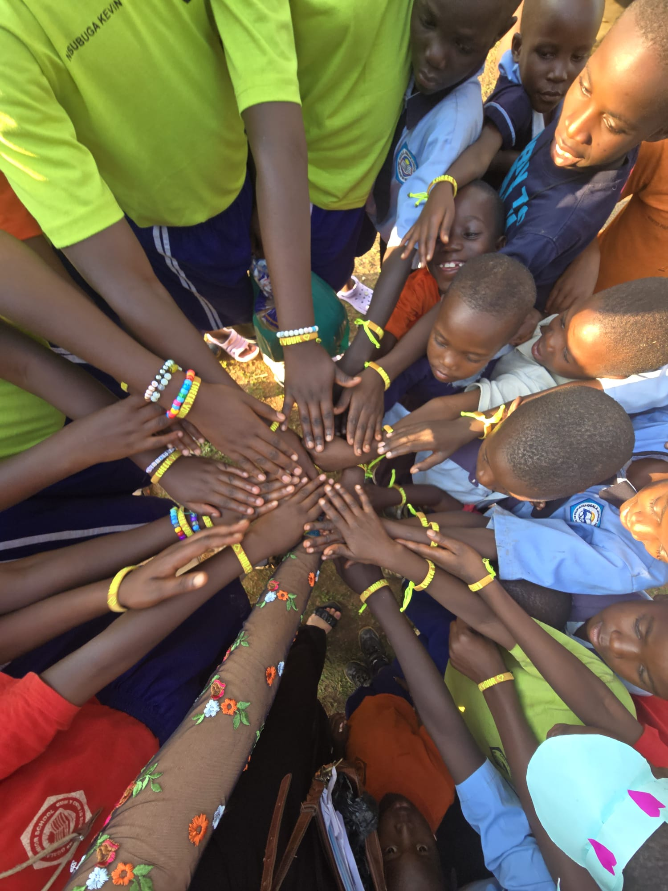

Do you believe you can make a difference? Literacy of Love believes every ounce of love causes a ripple of change. We think education is the key to a bright future and that nurturing and nourishment are basic needs. Our vulnerable, orphaned and destitute children in Uganda have big faith that our hopes will be a reality because of people like you.
Literacy of Love, Inc. (LoL) was started by founder and CEO Cari Matejka. Cari traveled to Uganda in 2012. Her heart and mind were captured after her visit to a village school. Over the years, she developed a personal relationship with many children, and she took an active part in ensuring many were provided for and remained in school. She couldn't unlearn their difficulties and great needs, and that weight of responsibility paired with her deep love is what motivated her to create Literacy of Love in 2016.
Cari travels to Uganda multiple times a year despite being a full-time teacher in Olean, NY. She lives in her Children's Home, The Heart, which is managed by Literacy of Love graduates. On a daily basis, she communicates, counsels, and manages LoL Family of the Heart members. There is no middle person – it's direct. All Ugandans on the ground managing daily life and projects are graduates of the program.
Although Family of the Heart members come from diverse backgrounds and beliefs, Ugandan culture and Cari both value faith. In America, Cari is an active member of her church. She has spoken as a guest at various organizations about her missions as well as preached at a few partnering churches both in the states and abroad.
Literacy of Love is registered in both America and Uganda. It is important to the organization that LoL and Cari purposefully raise children with the integrity of their culture. Valuing, reinforcing and intentionally using common cultural practices and not insisting foreign customs gives our program authenticity. We are raising Ugandan children to grow into responsible, principled, faithful Ugandan adults.
